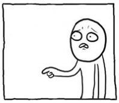

Английское произношение
Изучая алфавит в предыдущем уроке, вы, возможно, обрадовались, что всего 26 букв, вот выучу их и как начну читать английские тексты! Да? Не знаю, как вам лучше об этом сказать... сначала присядьте... Теперь вам надо выучить 44 звука. Ну, да, всего-то 44 звука, ничего такого страшного. Вы уже немножко готовы, если ранее правильно выполнили последнее упражнение. Зато потом уже точно будете уметь читать... по транскрипции. Транскрипция - это правильное произношение, указание звуков, которые нужно произнести. Этим мы и будем заниматься в уроке: будем учиться читать так, как написано внутри этих черточек / /. В них указана транскрипция. Чаще вы встретите транскрипцию в квадратных скобках [ ]. Но это не совсем правильно с научной точки зрения, поэтому я оставил вариант с черточками. Если вам больше нравятся [], используйте их. Коротко говоря, использование [ ] подразумевает очень точную транскрипцию с кучей дополнительных значков, в которых разбираются только научные работники или фонетисты. А раз эти научные значки не используются, то правильнее обозначать транскрипцию через / /.
Порядок изучения звуков английского языка ниже такой: сперва зеленым цветом показан фонетический знак звука, который вам нужно обязательно запомнить, затем желтым цветом дано приблизительное русское соответствие этому звуку или сам знак, если соответствия русскому звуку нет. На красную кнопку нужно нажать и посмотреть видео по данному звуку; понимать видео не нужно, нужно обращать внимание только на произношение и артикуляцию; видео от британского BBC (Би-би-си, а не Вэ-Вэ-эС ") ). Далее идут примеры и озвучка. Слова запоминать не нужно, но можно. Обращаем внимание на выделенную жирным букву, она будет давать нужный нам звук. По наведению/нажатию на слово отобразится его транскрипция. Под примерами будет дополнительная информация по звуку, не вместившаяся выше.
). Далее идут примеры и озвучка. Слова запоминать не нужно, но можно. Обращаем внимание на выделенную жирным букву, она будет давать нужный нам звук. По наведению/нажатию на слово отобразится его транскрипция. Под примерами будет дополнительная информация по звуку, не вместившаяся выше.
С произношением важно разобраться именно в начале обучения. Не обязательно, чтобы у вас получалось идеально, достаточно знать как правильно и стремиться к этому. Есть люди, которые быстро и много умеют говорить на английском, с высоким уровнем и т.п., но при этом которые не изучали произношение совсем, такие люди тащут эту проблему на всех этапах изучения английского языка, а от того, что они говорят быстро, вам придётся их переспрашивать, ведь они не знакомы с правильным произношением, а говорят на своём ломаном английском. Давайте не будем повторять за такими людьми.
Звуки английского языка
Гласные
cat (кошка), dad (папа), man (человек, мужчина), trap (ловушка), back (спина; назад)
Если вы прослушали все примеры, то заметили, что в некоторых случаях звук больше походит на русское э, а в некоторых - на русское а. Если пытаться сказать еще точнее, этот звук - нечто среднее между э и а. Даже внешний вид знака нам об этом говорит. В школах часто учат произносить его как э. Это неправильно! Для правильного произношения нужно широко открывать рот! (см. видео) При стандартном британском произношении он больше походит на а, перед носовыми звуками (n, m, ŋ) часто слышится как э
far (далеко), father (отец), start (старт), hard (трудный), class (класс)
Это не просто а, звук исходит из задней части ротовой полости, что ближе к горлу. Звук долгий. Сравните видео и аудио.
best (лучший), dress (платье), pen (ручка), head (голова), bed (кровать)
В большинстве случаев походит на русское э, что соответствует знаку /ɛ/, но иногда походит и на русское е. Англичане обычно не понимают разницу, поэтому у них изначально обозначалось как /e/.
wonderful (замечательный), teacher (учитель), dictionary (словарь), Saturday (суббота), daughter (дочь)
Чаще похож на краткое э, но может звучать и по-другому.
it (оно), lip (губа), sit (сидеть), kit (набор, комплект), ticket (билет)
Другое обозначение знака: /i/. Да, т.е. можно и /ɪ/, и /i/ Другие обозначения связаны с упрощением ввода специальных знаков.
rock (скала), not (не), odd (нечётный; странный), lock (замо́к), coffee (кофе)
Английское o более краткое, без выпячивания губ, поэтому обычно обозначается как /ɔ/. Вы также можете встретить современное обозначение: /ɒ/.
ball (мяч), small (маленький), war (война), morning (утро), thought (мысль)
Другое обозначение: /о:/
foot (нога), put (класть), good (хороший), book (книга), look (взгляд; смотреть)
Другое обозначение: /u/
learn (учить), fur (мех), third (третий), work (работа), girl (девочка; девушка)
Немного походит на ё, но это не ё, нужен более задний звук. Долгий. Слушайте аудио и видео. Также обозначается как /ǝ:/
Дифтонги
(сочетания двух гласных звуков)
my (мой), nice (приятный), try (пытаться), lie (лежать), high (высокий)
Другое обозначение: /ai/
cloud (облако), now (сейчас), flower (цветок), mouth (рот), town (город)
Другое обозначение: /au/
baby (ребенок), face (лицо), say (сказать), day (день), break (перерыв)
Другое обозначение: /ei/
air (воздух), pair (пара), bear (медведь), there (там), square (квадрат; площадь)
Другое обозначение: /ɛǝ/
no (нет), smoke (дым), only (только), show (показывать), road (дорога)
ǝ показывает, что o должен быть суженным. Но это необязательно, в американском английском это нормально. Другое обозначение: /ou/
choice (выбор), noise (шум), boy (мальчик), voice (голос), coin (монета)
Другое обозначение: /oi/
ear (ухо), near (близко), dear (дорогой), deer (олень), here (здесь)
Другое обозначение: /iǝ/
poor (бедный), tour (тур), sure (уверенный), pure (чистый), cure (лекарство)
Другое обозначение: /uǝ/. К словам pure, cure перед /ʊǝ/ подключается звук /j/ (й) (см. ниже, самый последний), /ʊǝ/ вместе с ним становится похож на /юэ/.
Согласные
pack (пачка), copy (копия), past (прошлый), happen (случаться), open (открывать)
п с более сильным выдохом. См. видео.
dark (темный), odd (странный), day (день), ladder (лестница), window (окно)
Разница с д в расположении языка, он должен касаться не зубов, а альвеол.
get (получить), take (брать), hot (горячий), button (кнопка), tree (дерево)
т с более сильным выдохом.
lucky (счастливый, удачный), king (король), sick (больной), cold (холодный), clock (часы)
к с более сильным выдохом.
fat (жирный), wife (жена), fifteen (пятнадцать), rough (грубый), phrase (фраза)
f произносится более энергично, чем ф.
then (затем), this (этот), there (там), together (вместе), father (отец)
Нет соответствия в русском языке. Звонкий звук, в противоположность к /θ/ ниже. Язык между зубами, см. видео.
thin (тонкий), throw (бросать), think (думать), healthy (здоровый), nothing (ничего)
Нет соответствия в русском языке. Глухой звук. Язык между зубами, см. видео.
hello (привет), hat (шляпа), hot (горячий), here (здесь), unhappy (несчастливый)
Более легкий х, едва слышный выдох.
last (последний), level (уровень), like (любить, нравиться), pull (тянуть), light (свет)
Разница с л в расположении языка, он должен касаться не зубов, а альвеол. Твердый звук, т.е. варианты с "ль" - только в диалектах.
nice (приятный), line (линия), funny (забавный), round (круглый), son (сын)
Разница с н в расположении языка, он должен касаться не зубов, а альвеол.
song (песня), wrong (неправильный), thing (вещь), anger (злость), reading (чтение)
См. видео и прослушайте аудио. Задняя спинка языка смыкается с опущенным мягким нёбом, и воздух проходит через носовую полость. Для того, чтобы добиться нужного положения органов речи, можно сделать вдох через нос с широко открытым ртом, затем произнести звук /ŋ/, выдыхая воздух через нос.
sorry (извините), red (красный), every (каждый), rabbit (кролик), marry (жениться)
Для правильного произношения, язык нужно оттянуть назад. Русский звук р будет сильно резать уши.
woman (женщина), Queen (королева), one (один), well (хорошо), what (что)
Начните выговаривать у, и сразу же переходите к следующему гласному. /w/ и образуется в процессе этой быстрой смены звуков.
yes (да), yellow (жёлтый), onion (лук), Italian (итальянский), useful (полезный)
Обратите внимание, что этот согласный звук может исходить от гласных букв. В слове useful /j/ сливается с /ʊ/ и получается /ю/.
Примечания:
- Удвоенные согласные произносятся как один согласный звук: hobby /'hɔbɪ/.
- Звонкие согласные в конце слова не становятся глухими, т.е. если написано dog /dɔg/ - "дог" мы и произносим, не "док". "Док" это "доктор", навряд ли ваша собака имеет ученую степень.
Док
"Дог"
Словарь
Итак, мы разобрались с "непонятными значками", но откуда нам их брать? Брать нам их нужно из англо-русского словаря, в нем приводятся английские слова с русским переводом. Сейчас вам вполне подойдет сайт Lingvo Live, но, если есть возможность, установите на компьютер Lingvo X5/X6. Google/Яндекс переводчик - это не словарь, он может угадать правильный перевод, а может и не угадать, неопытным им не пользоваться. Бумажный словарь - тоже хорошо, если в нём нет никаких упрощений, но в нём вам придется искать слово в алфавитном порядке, а не быстрым набором.
Словарь часто содержит следующие сокращения:
n – noun /naʊn/ существительное;
а – adjective /'æʤɪktɪv/ прилагательное;
v – verb /vɜːb/ глагол;
adv – adverb /'ædvɜːb/ наречие;
sing – singular /'sɪŋgjələ/ единственное число;
pl – plural /'plʊrəl/ множественное число
Особенности:
- Существительное в словаре располагается в единственном числе. Некоторые слова единственного числа не имеют, рядом с ними будет сокращение pl; а некоторые пишутся во множественном числе, а употребляются в единственном, с ними - sing.
- Глаголы пишутся в начальной форме (инфинитиве), отвечающей на вопрос: что (с)делать?
- Одно и то же слово может выступать существительным или глаголом, прилагательным или наречием.
- Одно слово может иметь большое количество значений, поэтому не торопитесь с выбором.
- Долгота гласного имеет значение. Она отмечается знаком /ː/ (два треугольничка, как песочные часы) или просто двоеточием /:/ (упрощенный вариант). Произносите долгий звук в два раза дольше краткого.
- Ударение отмечается знаком /'/, стоящим перед ударным слогом. Если слог один, то ударение не ставится.
- Транскрипцию каждого слова нужно проверять в словаре.
— Стоп. Т.е я должен каждый раз заглядывать в словарь?
— Да.
— Но...
— Никаких "но".


После шока.
— Но должны же быть какие-то правила чтения?
— Правила чтения есть, мы будем говорить о них позже, их учить нужно, но бывает так, что они просто не работают. Таковы суровые реалии.
— Раз они не работают, зачем тогда их учить?
— Если вы не будете учить правила, вы будете совсем уж словарно-зависимым, ни одно слово не сможете прочитать самостоятельно. Не настолько всё плохо, многие правила чаще работают, чем не работают, поэтому учить правила нужно обязательно.
Окееей
Надеюсь, что после всех этих откровений, мы всё ещё лучшие друзья. Мини-диалог в тему:
В шестом уроке мы разберём этот диалог. А пока закрепим тему урока.
Упражнения
Упражнение 1. Прочитайте по транскрипции следующие группы слов. Проверьте правильность по аудиозаписи. (сначала прочитать все слова вслух, только потом включить запись)
a) /bæk/, /bæg/, /'mʌðə/, /'fɑːðə/, /'dɔːtə/, /gʊd/, /'tɪkɪt/, /siː/, /rɔk/, /θɔːt/.
b) /suːn/, /lɜːn/, /wɜːk/, /naɪs/, /'flauə/, /mauθ/, /breɪk/, /beə/, /dɪə/, /sməʊk/, /ʃəʊ/, /ʃʊə/, /ʧɔɪs/, /skweə/, /kjʊə/.
c) /hə'ləʊ/, /'hæbɪt/, /'wɪndəu/, /gɜːl/, /'strʌgl/, /rɔŋ/, /kəuld/, /'nevə/, /'mjuːzɪk/, /rəuz/, /'ʌnjən/, /tə'geðə/, /θrəu/, /'pleʒə/, /'nʌθɪŋ/, /'vɪʒn/, /'rʌʃn/, /'ʤʌʤ/, /ʧɜːʧ/, /'læŋgwɪʤ/
Упражнение 2. Выпишите из словаря значения следующих слов:

Курс доступен в виде приложения на iOS и андроид (подробнее в уроке 1):